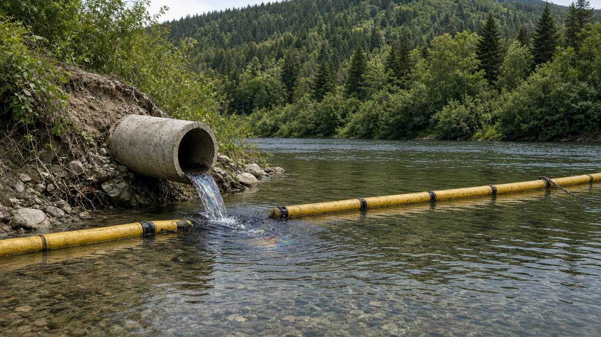
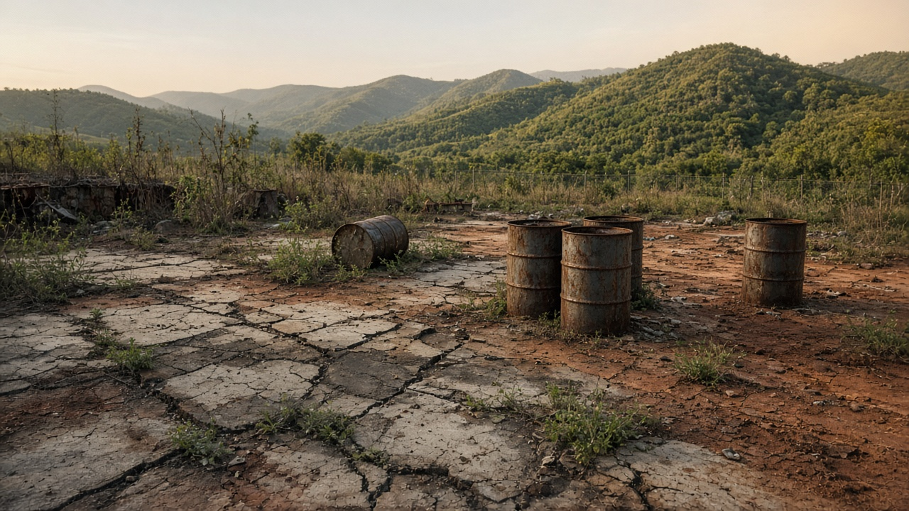
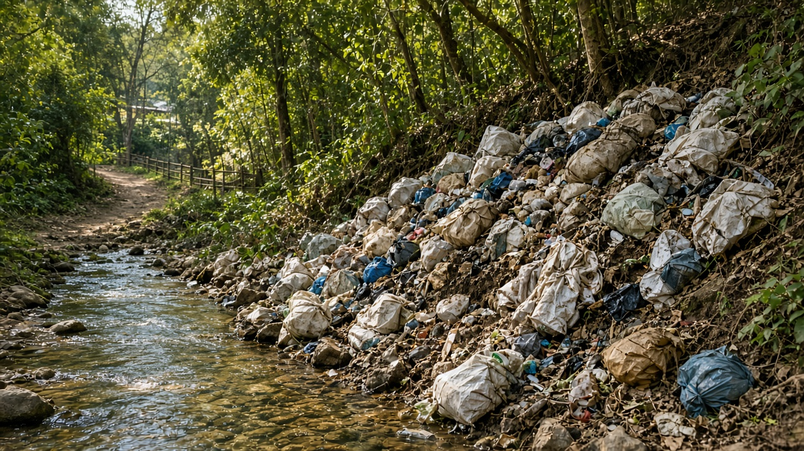

Polluter Pays Principle and Liability
Published on August 20, 2026

The polluter pays principle says that those who generate pollution or resource damage should bear the cost of prevention, control, and remedy, rather than the general taxpayer or downstream victims. It appears in national statutes and international declarations as a guide for charges, cleanup orders, and civil liability. Liability rules then specify who can sue, whether fault must be proved, how far back historic contamination counts, and whether directors or parent companies share the bill. Joint and several liability can make a solvent firm pay the whole cleanup when other operators have vanished.
Insurance, financial guarantees, and restoration funds keep the principle from failing when the operator is bankrupt. Strict liability for ultra-hazardous activities lowers the victim's burden of proof. Caps on damages and short limitation periods, by contrast, shift cost back to the public. Criminal sanctions sit beside civil suits when harm is willful or concealed. Informal dumps and small workshops test the idea because identifying a single payer is hard; collective schemes and municipal fees then share cost while still pointing responsibility at the trade that created the waste.
In practice, governments still subsidize cleanup of abandoned sites and treat epidemic disease from pollution as a health-budget item. Applying polluter pays consistently means fees that reflect damage, orders that restore sites, and courts that do not dismiss village claims for lack of expensive experts. Incidence still matters: if charges pass entirely to poor consumers without transfers, the principle can look regressive even when it is environmentally sound. Liability is environmental policy's memory: it prices yesterday's harm so tomorrow's investment internalizes risk instead of leaving a toxic orphan site.

प्रदूषकले तिर्ने सिद्धान्त भन्छ प्रदूषण वा स्रोत क्षति जन्माउनेले रोकथाम, नियन्त्रण र उपचारको लागत बोक्नुपर्छ, सामान्य करदाता वा तल्लो पीडितले होइन। यो राष्ट्रिय ऐन र अन्तर्राष्ट्रिय घोषणामा शुल्क, सफाइ आदेश र देवानी दायित्वको मार्गदर्शकका रूपमा आउँछ। दायित्व नियमले कसले मुद्दा हाल्न सक्छ, गल्ती प्रमाणित गर्नुपर्छ कि पर्दैन, पुरानो प्रदूषण कति पछाडिसम्म गनिन्छ र सञ्चालक वा मूल कम्पनीले बिल बाँड्छन् कि भन्ने तोक्छ। संयुक्त र छुट्टाछुट्टै दायित्वले अरू सञ्चालक हराए पनि तिर्न सक्ने फर्मलाई पूरै सफाइ तिराउन सक्छ।
बीमा, वित्तीय जमानत र पुनर्स्थापना कोषले सञ्चालक टाट पल्टँदा सिद्धान्त असफल हुनबाट रोक्छन्। अति जोखिमपूर्ण क्रियाकलापमा कठोर दायित्वले पीडितको प्रमाण भार घटाउँछ। क्षतिको सीमा र छोटो हदम्यादले उल्टो लागत जनतातिर फर्काउँछ। जानाजानी वा लुकाइएको हानिमा फौजदारी सजाय देवानी मुद्दा छेउमा बस्छ। अनौपचारिक थुप्रो र साना कार्यशालाले सिद्धान्त जाँच्छन् किनभने एउटा तिर्ने पहिचान गाह्रो हुन्छ; तब सामूहिक योजना र नगर शुल्कले लागत बाँड्छन् तर फोहोर जन्माउने व्यापारतिर जिम्मेवारी अझै देखाउँछन्।
व्यवहारमा सरकारले परित्यक्त स्थल सफाइ अझै अनुदान दिन्छ र प्रदूषणबाट महामारीलाई स्वास्थ्य बजेटको शीर्षक मान्छ। सिद्धान्त लगातार लागू गर्नु भनेको हानि झल्काउने शुल्क, स्थल पुनर्स्थापना गर्ने आदेश र महँगा विशेषज्ञ नभएकै कारण गाउँका दाबी नखारेज गर्ने अदालत हो। भार कोमा पर्छ भन्ने पनि हेर्नुपर्छ: शुल्क बिना रकमान्तर गरिब उपभोक्तामा मात्र सर्यो भने वातावरणीय रूपमा ठीक हुँदा पनि सिद्धान्त प्रतिगामी देखिन सक्छ। दायित्व वातावरण नीतिको स्मृति हो: हिजोको हानि मूल्यमा राख्छ ताकि भोलिको लगानी जोखिम आफैं भित्रियोस्, विषाक्त अनाथ स्थल नछोडियोस्।

प्रदूषक चुकाए सिद्धांत कहता है कि प्रदूषण या संसाधन क्षति पैदा करने वाले रोकथाम, नियंत्रण और उपचार की लागत उठाएँ, सामान्य करदाता या नीचे के पीड़ित नहीं। यह राष्ट्रीय अधिनियमों और अंतरराष्ट्रीय घोषणाओं में शुल्क, सफाई आदेश और सिविल दायित्व के मार्गदर्शक के रूप में आता है। दायित्व नियम तय करते हैं कौन मुकदमा कर सकता है, गलती सिद्ध करनी होगी या नहीं, पुराना संदूषण कितनी पीछे तक गिना जाएगा और संचालक या मूल कंपनी बिल बाँटेंगी या नहीं। संयुक्त और पृथक दायित्व एक समर्थ फर्म से पूरी सफाई दिलवा सकते हैं जब अन्य संचालक गायब हो जाएँ।
बीमा, वित्तीय गारंटी और पुनर्स्थापना कोष संचालक दिवालिया होने पर सिद्धांत असफल होने से रोकते हैं। अति जोखिमपूर्ण गतिविधियों में कठोर दायित्व पीड़ित का प्रमाण भार घटाता है। क्षति की सीमा और छोटी अवधि उलटी लागत जनता की ओर लौटाती हैं। जानबूझकर या छिपाई हानि पर आपराधिक दंड सिविल मुकदमों के साथ बैठते हैं। अनौपचारिक ढेर और छोटी कार्यशालाएँ सिद्धांत जाँचती हैं क्योंकि एक भुगतानकर्ता पहचानना कठिन होता है; तब सामूहिक योजनाएँ और नगर शुल्क लागत बाँटते हैं पर कचरा पैदा करने वाले व्यापार की ओर जिम्मेदारी अभी दिखाते हैं।
व्यवहार में सरकारें परित्यक्त स्थलों की सफाई अब भी अनुदान देती हैं और प्रदूषण से महामारी को स्वास्थ्य बजट की मद मानती हैं। सिद्धांत लगातार लागू करना हानि झलकाने वाले शुल्क, स्थल पुनर्स्थापित करने वाले आदेश और महँगे विशेषज्ञ न होने भर से गाँव के दावे न खारिज करने वाले न्यायालय हैं। भार कहाँ पड़ता है यह भी देखना है: शुल्क बिना अंतरण गरीब उपभोक्ताओं पर ही सरके तो पर्यावरण की दृष्टि से ठीक होने पर भी सिद्धांत प्रतिगामी दिख सकता है। दायित्व पर्यावरण नीति की स्मृति है: कल की हानि को मूल्य देता है ताकि कल का निवेश जोखिम भीतर ले, विषैला अनाथ स्थल न छोड़े।